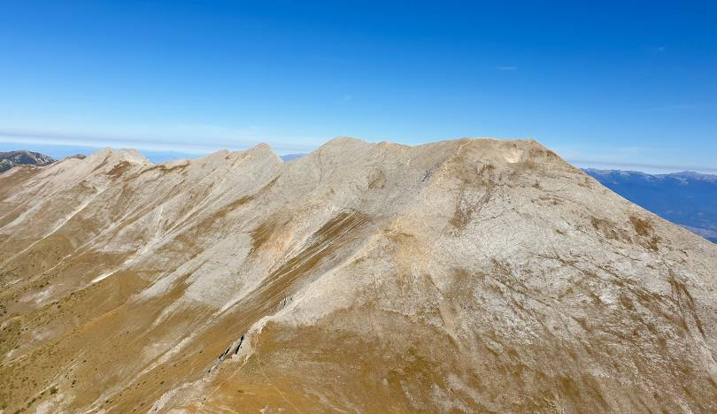

Дестинации
Със големия избор от места всеки тип турист може да си намери перфектната екскурзия.
Белоградчишки скали

Белоградчишките скали са скални форми в Западния Предбалкан, в южното подножие на Белоградчишкия венец, около Белоградчик. Представляват система от скални групи и единични скални разкрития. Това са естествени скални образувания, на места до 200 m високи, формирани в течение на стотици милиони години.
Адреналин за всички

Райското пръскало е най-високият постоянен водопад в България и на Балканския полуостров – 124,5 m. Намира се в Стара планина, на южния склон под най-високия старопланински връх – Ботев. На територията е на природен резерват „Джендема“, част от Национален парк „Централен Балкан“. Обявен е за защитен природен обект през 1965 г.
Средновековна България

Царевец е хълм във Велико Търново, както и едноименна крепост в средновековния Търновград. Разположена е в близост до стария град на Велико Търново. Тя е била главната българска крепост по време на Второто българско царство, когато Търново е столица на царството. През Средновековието хълмът, на който се намира, е изцяло застроен с жилищни и административни постройки.
За катерачи
Хребетът Кончето е остър рид в Пирин, намиращо се на височина от 2,810м. От едната страна е много стръмно, а от другата - почти вертикално. Въпреки това притежава спиращи дъха гледки. Още един избор за любителите на адреналин.